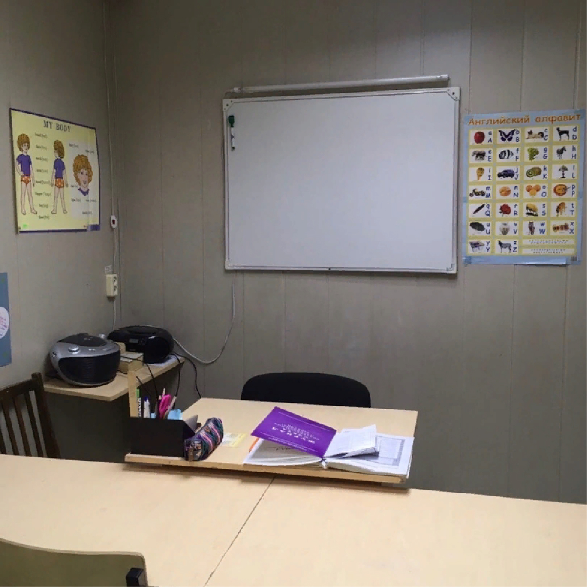
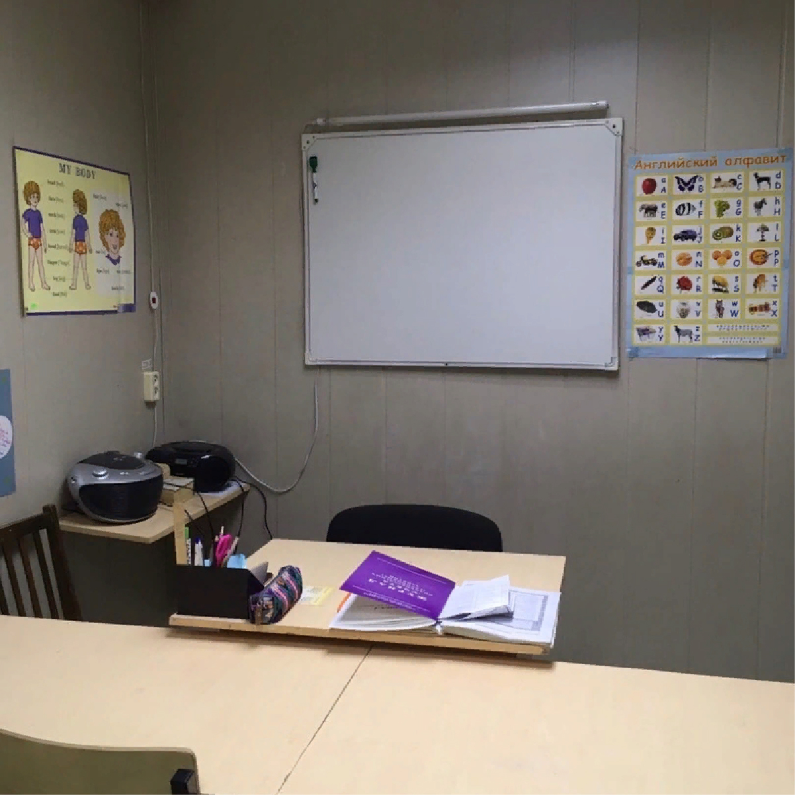

О нас
Всё началось в 2000 году с небольшой комнаты в общежитии РАК. Так был открыт филиал Ярославской "Студии иностранных языков YES" В 2004 году он обосновался на ул. Гагарина 12. В 2010 году Рыбинский филиал обрёл самостоятельность и появилась Студия иностранных языков "The Best".
В 2020 у нас юбилей!
 
